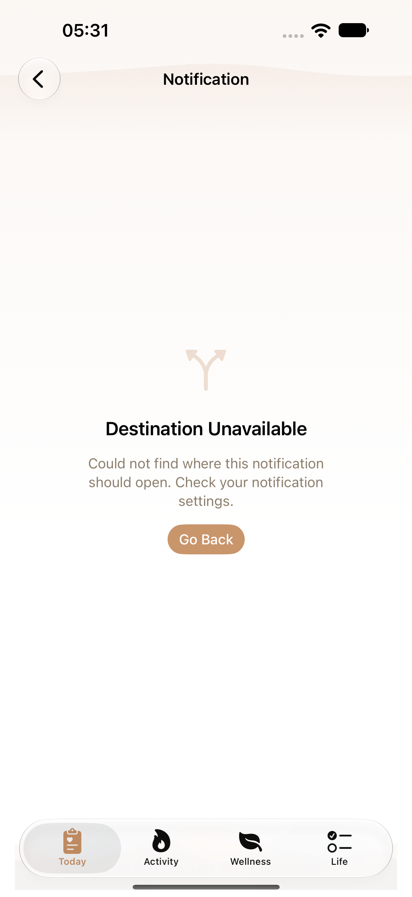
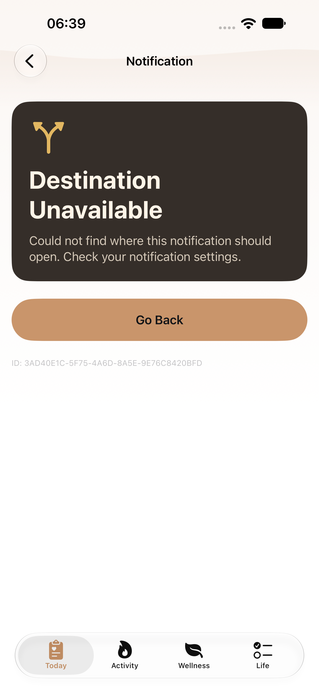
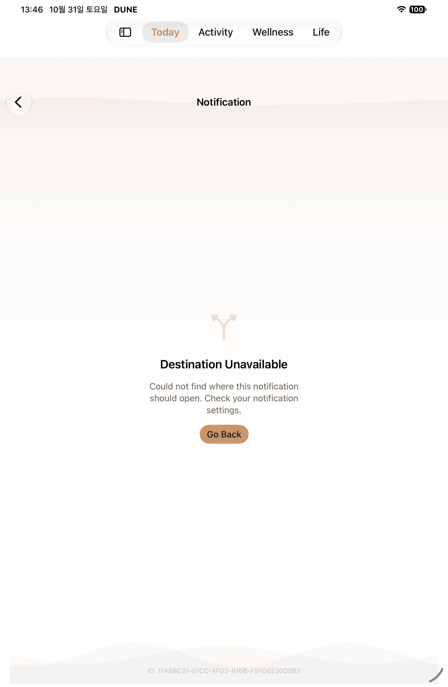
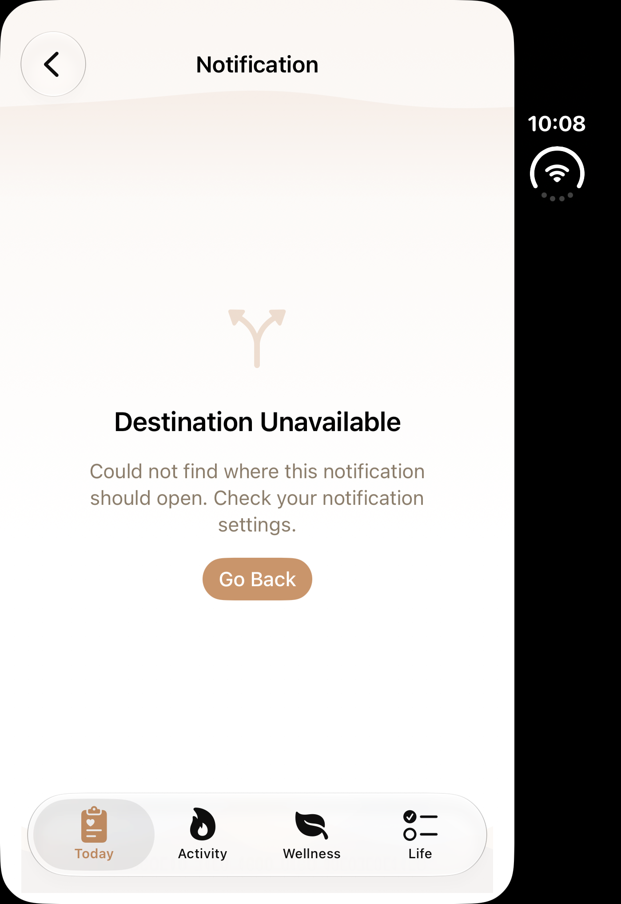
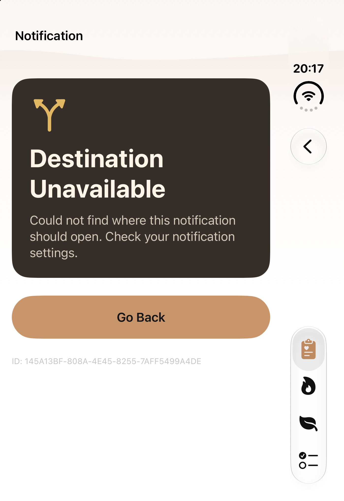
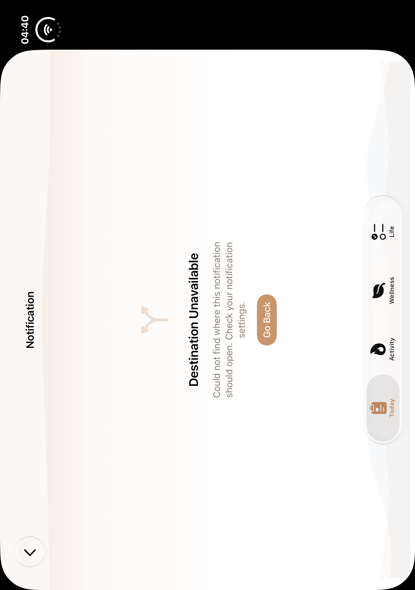
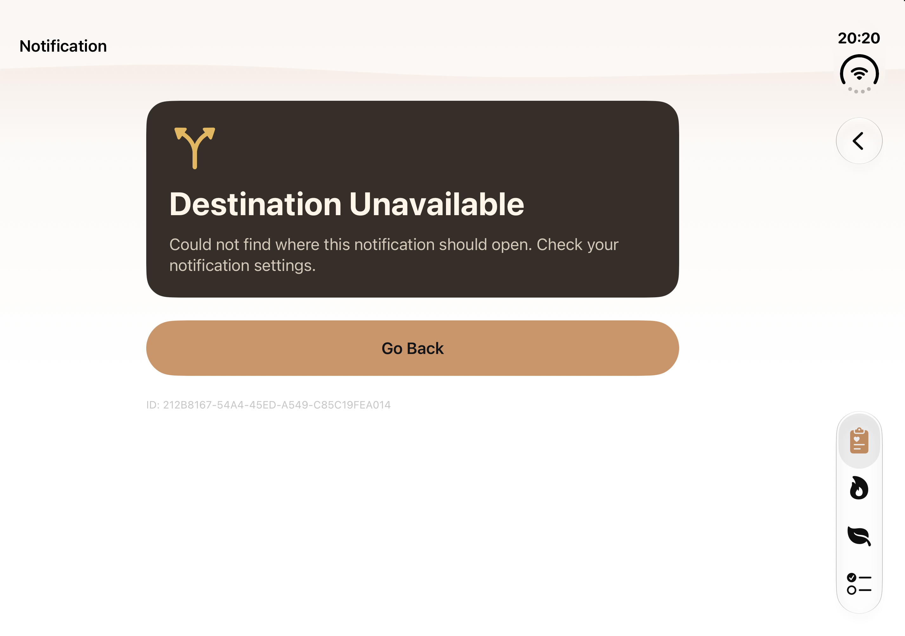

T13 · 알림 목적지 없음
일반 iPhone·iPad·Duo 접힘·펼침의 실제 전후 자료를 정식 맵 T13 네 행에 반영했습니다. Phone normal·MAX는 역사적734 자료, iPad·Duo는 각 원본에 기록한 새 normal 실행 자료입니다. 원래 설명·Go Back·실제 UUID를 구분해 확인할 수 있습니다.
regular
regular · 역사적 T13 개편 전
2026-10-13T05:31:59.814000+09:00 · [1320, 2868] · SHA2569e96a1d2150ee27cdd9e28f9f80ba9d29d99427eeff16c19a03409063fec294e
October13 historical same-family unavailable. Per-row revisionunknown; global443dirty separate. OldDuo pose/status/angle unverified; nativeorientation retained.Phone · 역사적734 기본 · Back 전 검증완료
2026-10-31T06:39:11.832000+09:00 · [1320, 2868] · SHA256d5ccfb90f0dcb9bc69f7ea9d9bad93ae108e11334cc0deaec197337a0782abae
October31 actualnormal+MAX2PASS; unchangedT13app/testblock reuse, not newff68/wholeHEAD execution. MAX images show successive scroll positions; no single frame claims all content visible. ipad
iPad mini · unavailable 개편 전 · 해당 case PASS
2026-10-31T13:46:52.173000+09:00 · [1512, 2316] · SHA25677f65ee83ee8272e5d0808dce390b03004366d2cd1b3cdcdc4267c02884627e4
Exact unavailablecase PASS within baselinegroup FAILED6executed5passed1bedtimefailure; not groupPASS or redesignfailure. Mini1512×2316 versus forthcomingPro13 differentmodel/UID/viewport/date.iPad Pro13 · 실제 before Back 검증완료 · 11월2일3fac 3fac15d4 · 2026-11-02T20:06:44.373000+09:00
3fac15d4 · 2026-11-02T20:06:44.373000+09:00
2064×2752 · SHA256 7c141c1e0b84ed495ef09a246f0d3836bf8fd135d3ddeca107535df53f02b258
native-XCTest-attachment duo
duo · 역사적 T13 개편 전
2026-10-13T10:08:30.330000+09:00 · [1398, 2034] · SHA2567ca557c341d85f94b245701b28695e270b2cebe7d2ea3eea1a03163ced539e9f
October13 historical same-family unavailable. Per-row revisionunknown; global443dirty separate. OldDuo pose/status/angle unverified; nativeorientation retained.Duo 접힘 · 실제 before Go Back 검증완료 · checkpoint005
3fac15d4 · 2026-11-02T20:17:56.577636+09:00
1398×2034 · SHA256 272a491a81e7ecad0bdf7782e99be6eb5c3aa77d619d5ff3b22a0aa0f229b471
host-file-mtime of native paired PNG; not attachment time or checkpoint deadline duo-open
duo-open · 역사적 T13 개편 전
2026-10-13T04:40:36.226000+09:00 · [2006, 2852] · SHA256cbd2a6a23db9dc91f5cda267281c151efb2d5469e54a814b1e55a7bf60f11f8e
October13 historical same-family unavailable. Per-row revisionunknown; global443dirty separate. OldDuo pose/status/angle unverified; nativeorientation retained.Duo 펼침 · 실제 before Go Back 검증완료 · checkpoint005
3fac15d4 · 2026-11-02T20:20:29.545668+09:00
2853×2007 · SHA256 f8d1f451de3fa7d48349a29aee60156817e9ffa71b3576c33b681b8f85402457
host-file-mtime of native paired PNG; not attachment time or checkpoint deadline 역사적 Phone darkMAX · 각 스크롤 위치
ipad-normal-3fac15d4 · 추가 실제 상태
duo-closed-3fac15d4 · 추가 실제 상태
duo-open-3fac15d4 · 추가 실제 상태